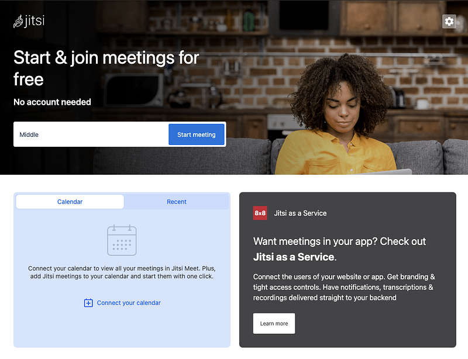
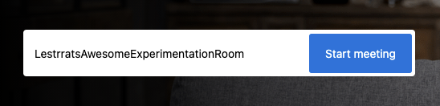
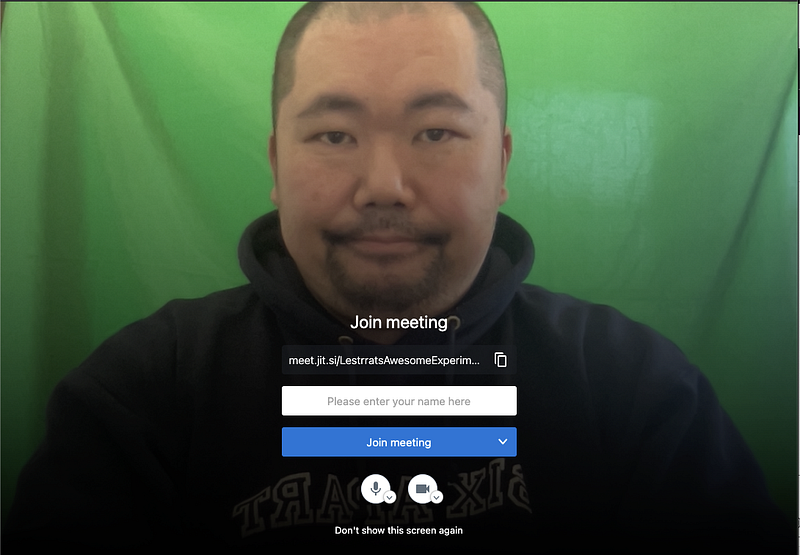
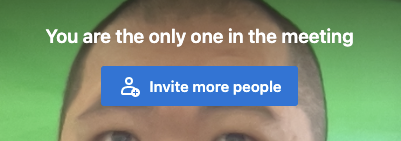
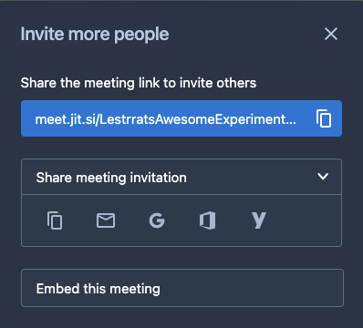
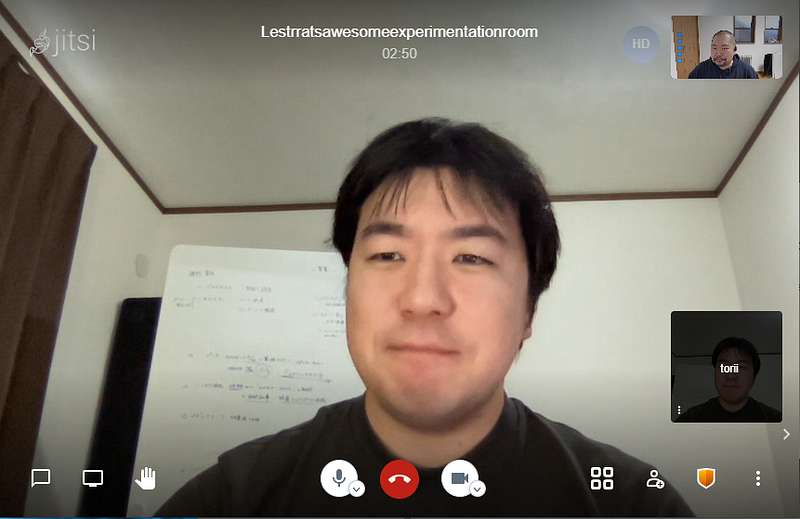
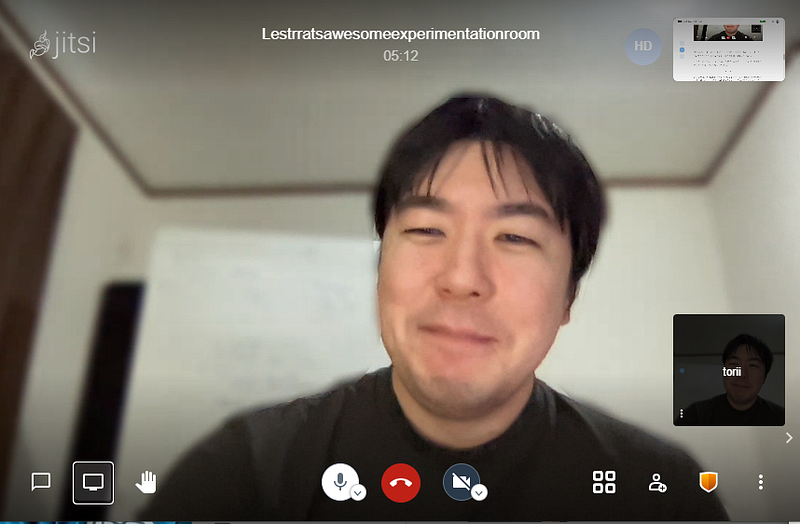

Jitsi — OSSなビデオカンファレンスシステム
Jitsi — OSSなビデオカンファレンスシステム
仕事がら、旬な技術の話題をいつも探しております。
2020年といえばパンデミック、そしてそれに伴う生活の激変。仕事面ではビデオ会議が当たり前になりましたね。
そんなわけでこのあたりの技術、運用についての話が聞きたいと思ったのが2020年5月頃でした。
色々調べてみたところ、Zoom, Microsoft, Google Meet等のビッグプレイヤーの他に、FOSDEMやEFF系のイベントで活躍しているJitsi（ブルガリア語で「ワイヤー」の意味）というオープンソースのシステムがあることを知りました。
https://ja.wikipedia.org/wiki/Jitsi
Jitsiは最初はXMPPを基本としたかつてのICQのようなメッセージングアプリケーションとして開発されていましたが、現在では立派なビデオ会議システムになっています。
今から使う人は特に何もインストールしなくても新しめのウェブブラウザがあれば以下のサイトに行くだけですぐビデオ会議を開始出来ます。アカウントすら必要ありません。

ビデオ会議するにはまず部屋を作ります。上記ページで適当な部屋の名前をタイプして”Start meeting”ボタンを押すだけ！

部屋の名前は固有のものである必要があります。別途セキュリティ設定で入室の制限は可能ですが、部屋のURLは誰でもタイプして参加を試みることは可能なので、あまりすぐに思いつくような名前（”foo”とか”hoge”とか）は使わないほうがいいです。

会議をスタートすると、このような画面になるので、ここで初めてユーザーネーム的なものを入力します。これで参加完了です。
他の参加者はこのミーティングのURLを知っていればそれだけで参加可能になります。なので、URLをどこかにペーストするか、Invite more peopleというボタンを押してメール等でお知らせすることができます。


他の人はこのリンクを踏めば同じようにハンドルを指定して参加するだけです。

背景のぼかしもまだベータですが、対応してますし、録画、ストリーミング、別サイトへの埋め込みなど、様々な機能に対応しています。

わりとすごいなぁ、と思ったのが音声で、なんとなく、ですが、声が多少かぶっても喋りやすい感じがします。
話を戻すと、実は2020年5月の時点ではこのサービスは急激な需要の増加による対応中でイマイチ使い勝手がよくなかったのが記憶にありました（多分接続すらできなかった）。
なので最初は「ああ、よくある『作ってみたけど運用までは手が回らない』系か…」と、正直印象はよくなかったのです。
ともあれ、このあたりの話を聞きたかったのでJitsiも含めて、だれか担当者にお話を聞けないかとTwitterで聞いてみました。もちろんこのあたりの事業はどの会社もNDA縛りでなんも話すことできないよなーとは思っていたのでダメ元での発信でした。
で、案の定なしのつぶてでした。まぁ、そりゃそうですよね。
その後しばらくは他の作業が忙しくて忘れていたのですが、10月頃にまた確認してみたところ、「あれ…？Jitsi Meetが使えるようになっている？」となっており、しかも前述のように画像もキレイだし、音声もいいし「お… これは…？！」となって再度Twitterで接触を試みてみました。
と、ここで中の人から返事が！
というわけでいくらかの準備と交渉の末、無事ビデオカンファレンスシステムの開発運営に関しての講義をしてもらうことができました！
特にパンデミック下での需要の急増とかは多分他社サービスでも同じようなことをしているのだろうけれども、こちらはオープンソースなシステムなのでかなり詳細にどんなことが起きてどんな障害が発生したのかとかを聞くことができます。
自分でJitsiのインスタンスを立ち上げることもDockerで簡単にできるし、興味ある人は是非公開中の動画のほうを見てみてください！